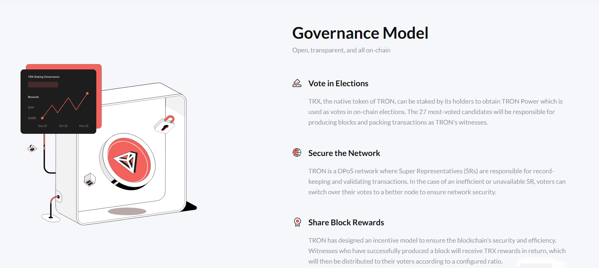

TRON uses a delegated proof-of-stake model where holders of TRX can stake (lock) their coins to receive voting power and delegate it to Super Representatives (SRs). In return, SRs share a portion of block rewards with voters. This guide focuses on practical steps to stake TRX safely, understand rewards, and plan for unstaking.
Ways to Stake TRX
You can stake natively with a self-custodial wallet, through exchanges, or via third‑party staking services. The best route depends on your priorities: control over keys, simplicity, or automation.
Staking Paths Compared
| Method | Best For | Key Features | Considerations |
|---|---|---|---|
| Native (TronLink + TRONSCAN) | Control & Transparency | Self-custody, choose SRs directly, clear vote/claim flows | Requires learning SR rewards and policies. |
| Centralized Exchange (CEX) | Convenience | One-click staking, auto-rewards | Custodial risk, platform fees/commissions. |
| Staking-as-a-Service | Hands-off management | Delegation tools, reporting | Service fees; verify reputation before use. |
| DeFi / Liquid Options | Liquidity | Potential tokenized staking positions | Smart‑contract risk; availability varies by protocol. |
Parameters & Costs
Key items to understand before staking: lock/unlock timing, how SRs pay out, and the effect of network fees.
Typical Staking Parameters
| Item | Typical Range | Notes |
|---|---|---|
| Unstake Waiting Period | ~3 days (common) | Expect a short unlock delay before TRX becomes transferable. |
| SR Reward Policy | Varies by SR | Check each SR’s commission and payout schedule. |
| Network Costs | Low | TRON uses Energy/Bandwidth; transactions usually cost minimal TRX. |
| CEX / Service Fees | Varies | Custodial platforms may charge commissions or spreads. |
Safety First: Staking Securely
Use official wallet downloads, back up seed phrases offline, and verify SR addresses/pages. When staking natively, you delegate votes—you do not send TRX to the SR. Be wary of phishing and fake airdrops.
Practical Security Tips
- Self-custody: Prefer hardware wallets or reputable extensions like TronLink.
- Verify SRs: Review their history, uptime, and community presence.
- Start small: Test with a small amount before scaling up.
- Keep records: Save timestamps of stake/unstake and claimed rewards.
Taxes & Records
Tax treatment of staking rewards differs by jurisdiction and can change over time. Keep detailed logs of rewards and any subsequent sales. Consult a qualified professional for advice tailored to your location.
Authoritative & Trustworthy Resources
Review official documentation and reputable guides to stay current on staking mechanics and best practices.
- TronLink Wallet — Popular self‑custodial TRON wallet.
- TRON Developer Docs — Protocol and resource model (Energy/Bandwidth).
- Binance Academy — General background on TRON and staking concepts.
Frequently Asked Questions (FAQ)
What’s the quickest way to start staking TRX?
Install TronLink, fund your wallet with TRX, open TRONSCAN, pick SRs, and stake. The flow is straightforward once your wallet is set up.
Is there a lock-up period?
Yes—expect a short waiting period when you unstake before funds become transferable (commonly around three days).
How are rewards determined?
Rewards come from SRs sharing block rewards with voters. Each SR sets its own commission and payout cadence—review their terms before voting.
What APY should I expect?
APY varies by SR policies and network conditions. Focus on reliable SRs with transparent distribution rather than headline percentages.
Can I stake from a hardware wallet?
Yes—many users connect hardware wallets via TronLink or supported apps and then interact with TRONSCAN to stake and vote.
What’s the difference between Energy and Bandwidth?
They are TRON’s resource units. Operations consume Energy/Bandwidth; staking can grant resource allowances and reduce transaction costs.
Do I send TRX to the SR?
No. You delegate votes to SRs while your TRX remains in your wallet under your control.
How do I claim rewards?
On TRONSCAN or your wallet’s interface, use the claim function according to each SR’s payout schedule.
Are there risks?
Smart‑contract interfaces, phishing, or custodial risks (if using CEX) are the main concerns. Use official links, verify SRs, and keep keys secure.
What records should I keep?
Dates and amounts for stake/unstake and each reward claim. These help with security reviews and potential tax reporting.